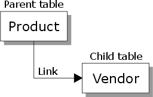

Set Links
In building a set, you first select the primary table, and then add a link to each table you want to add.
You can establish a link between two tables that have related data (e.g. Product and Vendor, or Invoice and Customer). To establish a link, the databases must have one or more fields that store the same data in each table. In the following example, the VEND_ID field is the linking field between the Product and Vendor tables.

Alpha Five supports two types of links: one-to-one and one-to-many.
See Also